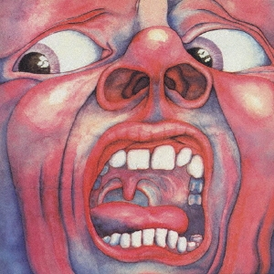

クリムゾン・キングの宮殿
Album

1969年発表の記念すべきデビュー・アルバム。
インパクト大のジャケットに象徴される通り、それまでのロックに対する既成概念をことごとく打ち破る衝撃的な楽曲世界を展開。
70年代に興隆する"プログレッシヴ・ロック"の源流となった作品
収録曲
- 21st Century Schizoid Man (including "Mirrors")
- I Talk To The Wind
- Epitaph (including "March for No Reason" and "Tomorrow and Tomorrow")
- Moonchild (including "The Dream" and "The Illusion")
- The Court of the Crimson King (including "The Return of the Fire Witch" and "The Dance of the Puppets")